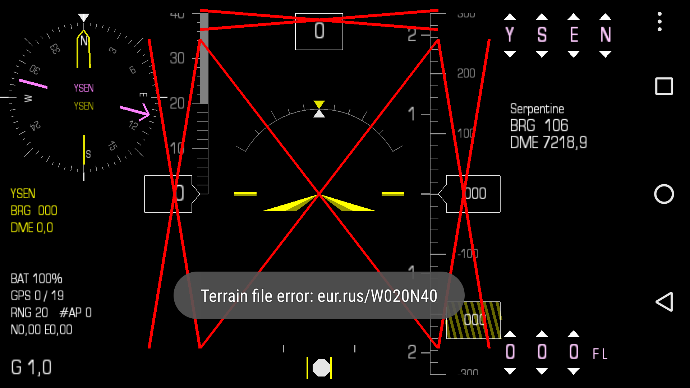

|
How do I "LEVEL RESET" the Stratux device?
KWik EFIS / Stratux
Swipe Right  ... Lift finger and then, Swipe Left
... Lift finger and then, Swipe Left
 . .
How do I "ZOOM" the map?
Kwik DMAP
 Swipe Up to Zoom in.
Swipe Up to Zoom in.
 Swipe Down to Zoom out.
Swipe Down to Zoom out.
Swipe Right to enable Auto-Zoom.
I cannot get a menu on my Samsung Galaxy S7.
Samsung Galaxy S7
I searched in the parameters and I found an option Activate navigation bar,
so the menu button can appear.
I describe the steps: phone parameters => Buttons = > Activate navigation bar.
Other phones
When I start the program I get "Terrain file error: eur.rus/W020N40" message.

Terrain Errors
- Check that you have an approriate corresponding data pac installed.
- Check the GPS has a valid location and you are in the area covered by eur.rus.
You need version 3.2 (or later) of Kwik EFIS (player.efis.pfd).
I cannot get a menu on my Samsung Galaxy S7.
Samsung Galaxy S7
I searched in the parameters and I found an option Activate navigation bar,
so the menu button can appear.
I describe the steps: phone parameters => Buttons = > Activate navigation bar.
Other phones
When I first loaded it on my phone, I still had a couple of red X's on the display.
Finally figured out that if you're not moving, it thinks (knows?) something isn't right?
Red X's
The speed has to be non-zero (from memory I think the threshold is 1 m/s). There are also
different behavior below and above the stall speed, which is why it is important to choose a
suitable aircraft model in the "Manage" section. If yours is not there, let me know the V speeds and I will add it.
Demo Mode
In order to practice with the program, enable the "Demo Mode" and it will simulate movement
allowing you to use it like a simple flight simulator.
I just installed the F-Droid app installer/repository, and found the kwik efis app.
But both indicate they 'run at startup'. How do we set them up so they only load
when we want to use them? Many android apps are battery hogs when running in the
background, and I'd like to avoid that issue.
Run At Startup
The Kwik EFIS app will not run at startup. You need to start it like any other
app and once you exit the app it is gone. No background processes at all.
To be as accurate as possible, the app does however use the maximum
performance from the GPS when it is running, there is no way around that.
The to 'run at startup' handler code exist in the program and is
therefore reported, but is not used and is disabled in the manifest.
The 'run at startup' handler is only used in a dedicated version of Kwik EFIS
when it is intended as the only app running on a permanently installed device.
Ie Kwik EFIS will start running when the device is powered on.
Would a 1st gen Nexus7 be adequate? 2013 version?
What about some of the phones that are a few years old, like the Galaxy S4 or similar?
Hardware/Devices
I have used the original Nexus7 (2012) for all the development and testing.
It is adequate, but is the minimum I would use.
I tested with a Samsung S2 phone and that was close,
but not quite good enough to be useful. I have been told that the later models of
Samsung S 4/5 works well, but I have not had the opportunity to test for myself.
|